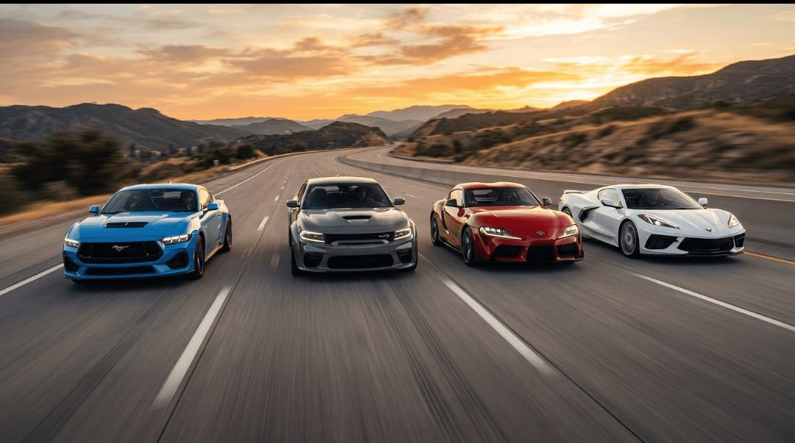
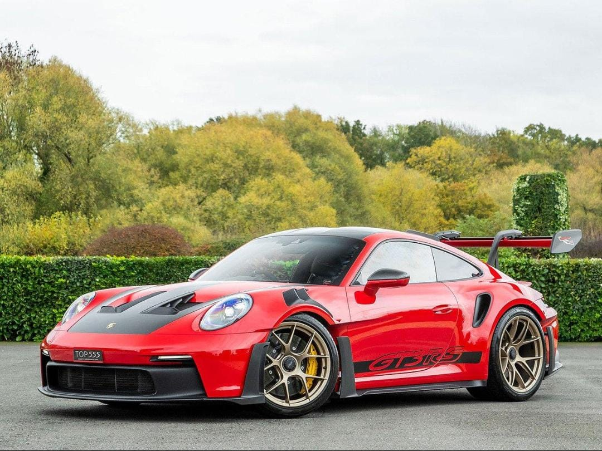
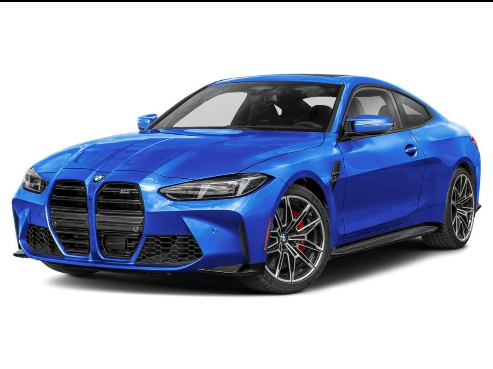
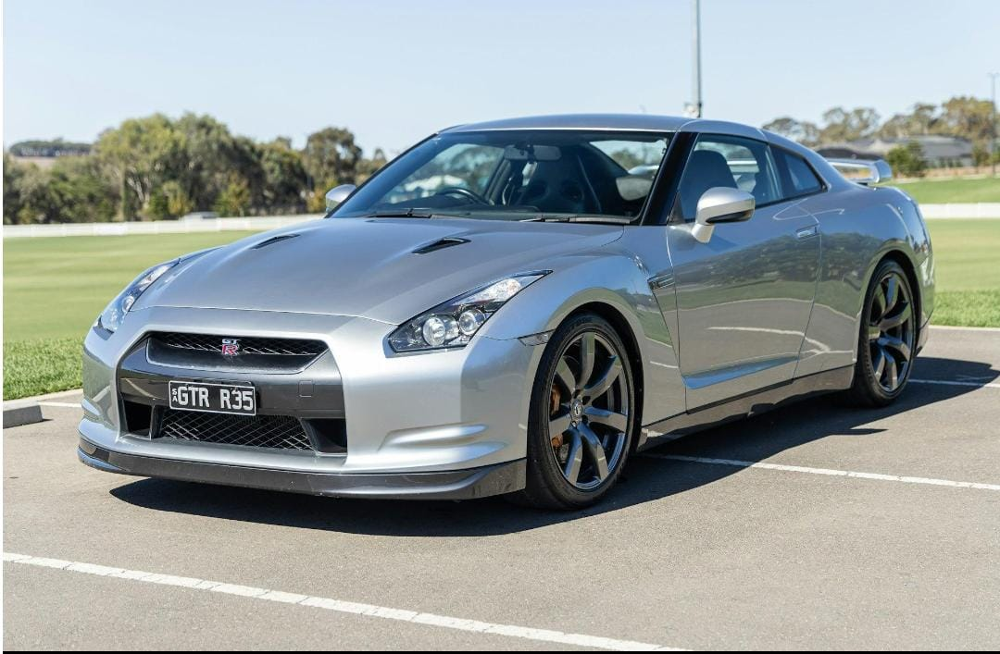

Os carros esportivos são conhecidos por seu design moderno, motores potentes e excelente desempenho. Eles são desenvolvidos para proporcionar uma experiência de condução emocionante e conquistar pessoas apaixonadas por automóveis.
Existem diversos modelos esportivos no mundo, cada um com características próprias. Alguns se destacam pela velocidade, outros pela tecnologia e outros pelo visual impressionante.

O Porsche 911 GT3 RS é um carro esportivo alemão desenvolvido para oferecer alto desempenho. Seu design aerodinâmico e seu grande aerofólio traseiro ajudam a melhorar a estabilidade durante a condução em pistas.Esse modelo é conhecido por sua precisão nas curvas e por seu motor de seis cilindros contrapostos. É um carro que combina engenharia avançada com características inspiradas no automobilismo.

O BMW M4 Competition é um carro esportivo fabricado pela BMW. Ele possui um design marcante, com linhas agressivas e uma aparência que transmite esportividade.Além de sua aparência, o modelo se destaca pelo motor de seis cilindros em linha com turbocompressor. Dependendo da versão, pode possuir tração traseira ou integral.

O Nissan GT-R é um carro esportivo japonês muito conhecido entre os apaixonados por velocidade. Seu visual agressivo e suas características mecânicas fizeram dele um dos modelos mais famosos da Nissan.O veículo possui um motor V6 biturbo e tração integral. Essas características ajudam a proporcionar um excelente desempenho e uma boa distribuição de força entre as rodas.
Os carros esportivos despertam o interesse de muitas pessoas por causa de seu design, desempenho e tecnologia. Cada fabricante procura desenvolver modelos que apresentem características únicas e conquistem novos admiradores.
O Porsche 911 GT3 RS, o BMW M4 e o Nissan GT-R são exemplos de carros que representam diferentes estilos de engenharia automotiva. Cada um possui características próprias, mas todos compartilham a proposta de oferecer uma experiência de condução esportiva.